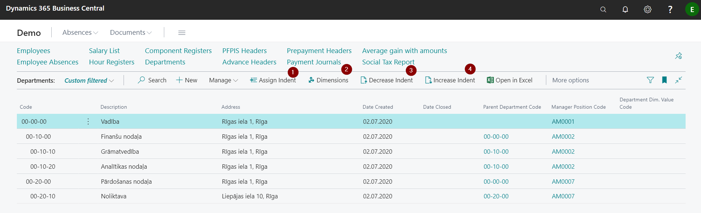
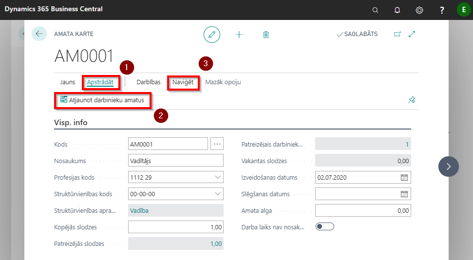
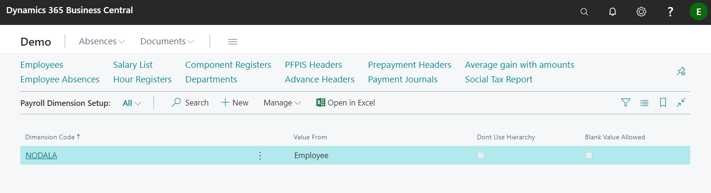

Company Setup
In order to start enter the data in the employee card easily, without a hitch, it is recommended that you initially perform the settings listed below, which will be required to fill in the fields on the employee card:
- create a list of departments ;
- create a list of employee positions;
- define the payroll dimensions;
- set up calendars according to which salaries will be calculated
Departments
In the system, you can maintain structured information about the departments. The information will be both current and historical, because the structural units in the system are not deleted, but closed.
To ensure the departmental hierarchy, sorting and indent methods are combined. Thus, one department is subordinate to another if it is after the main unit and has one level more indention. Depending on the depth of department indention and the number of departments, a department code shall be drawn up. Departmental indentions are created through functions  ,
,  and
and  .
.
You can link dimensions to departments by clicking the button Dimensions ( )
)

| Field name | Description |
|---|---|
| Code | Department code defined by the user. |
| Description | Department name. |
| Address | Address where the department is located. |
| Date Created | Date when the department was created. |
| Date Closed | Date when the department is closed. |
| Parent Department code | Department code to which the department is subject. |
| Manager Position Code | The corresponding manager position code from the list Positions. |
| Department Dim. Value Code | Department dimension value code from standard payroll dimension classifier. |
Positions
All positions used in the company are listed in Positions. A separate Job Card must be created for each position.
If the information about the profession code and department code is corrected in the system, then in order for these changes to appear in the employee card, the data update function shall be activated in the position card, by clicking on Process () and Update Employee Positions ().
You can add dimensions to the position by clicking Navigate () and choose the function Dimensions.

| Field name | Description |
|---|---|
| Code | New position's code. |
| Description | Positions title. |
| Profession Code | Code from Employee Statistic Groups. |
| Department Code | Code from Departments. |
| Department Description | Description from Departments. |
| Total Loading | Total loads that are expected for this position. |
| Current Loading | Loads what are currently occupied in the company. |
| Current Employee Count | Number of employees employed in a particular position. |
| Vacant Loading | How many workloads are still vacant for this position. |
| Date Created | The date when the position was created. |
| Date Closed | Position close date. |
| Salary Amount | Informative field. |
| Work Time Undeterminable | Note if the job time is undetectable and subordinated to the company's needs. |
Payroll Dimension Setup
The use of this functionality is not mandatory for the successful operation of the system.
In the Payroll Dimension Setup indicate the dimensions that will be used in the salary calculations. The other dimensions available in the system will be ignored.

| Field name | Description |
|---|---|
| Dimension code | Selects a dimension from the list that will be used in the salary calculation. |
| Value From | Specifies the level from which the dimension value will be taken: a) Source – the specified dimension code is taken from the Absence Registration, Payroll components, Payroll components registry; b) Payroll component – The specified dimension code is taken from the payroll component; c) Employee Position – The specified dimension code is taken from the employee position; d) Employee – The highest level, the specified dimension code is taken from the employee card. |
| Don't Use Hierarchy | If there is no check mark in this field, the specified dimension code is searched at higher levels. If there is a check mark, then only at the selected level. |
| Blank Value Allowed | Checks that the dimension value is not an empty value after the above settings. If there is a check mark in this field, the system does not make an error message if in any level (at a specific level if there is a check mark in the do not use hierarchy field) dimension is not found. |
The system offers the ability to add numerous dimensions to the departments and the positions. If dimension values are indicated at the department and other dimension values are indicated at the relevant position, all (both those indicated to the department and those indicated to the position) will be shown at the position card of the employee.
Tip
We do not recommend to specify the same dimensions, but with different values for both - the department and the position.